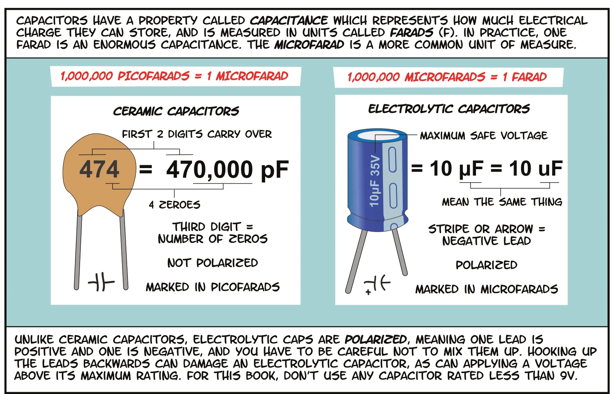

Capacitors have a property called capacitance which represents how much electrical charge they can store, and is measured in units called farads (F). In practice, one farad is an enormous capacitance. The microfarad is a more common unit of measure.
Ceramic capacitors — 1,000,000 picofarads = 1 microfarad. The first two digits carry over and the third digit is the number of zeros, so 474 = 470,000 pF. Not polarized. Marked in picofarads.
Electrolytic capacitors — 1,000,000 microfarads = 1 farad. The can is marked with the capacitance and maximum safe voltage; 10 µF = 10 uF mean the same thing. A stripe or arrow marks the negative lead. Polarized. Marked in microfarads.
Unlike ceramic capacitors, electrolytic caps are polarized, meaning one lead is positive and one is negative, and you have to be careful not to mix them up. Hooking up the leads backwards can damage an electrolytic capacitor, as can applying a voltage above its maximum rating. For this book, don’t use any capacitor rated less than 9V.